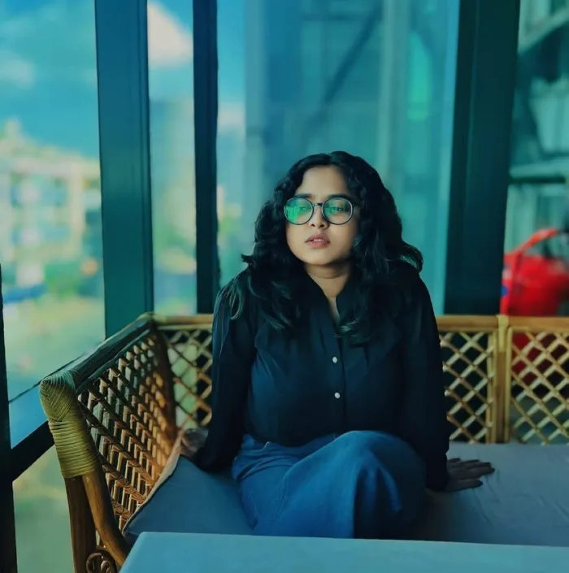
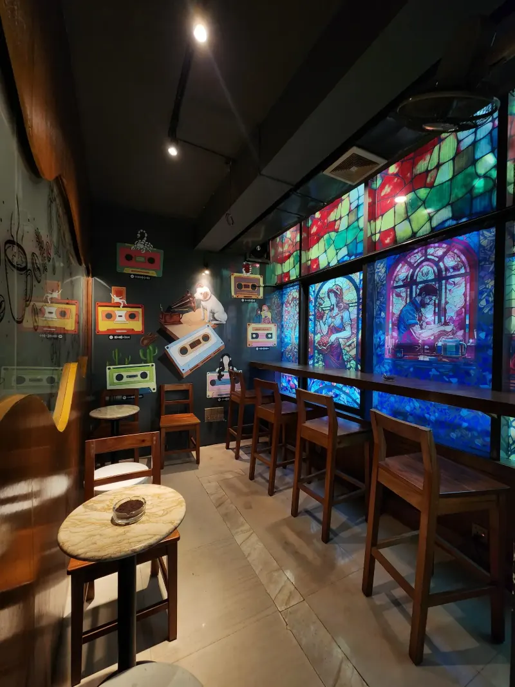
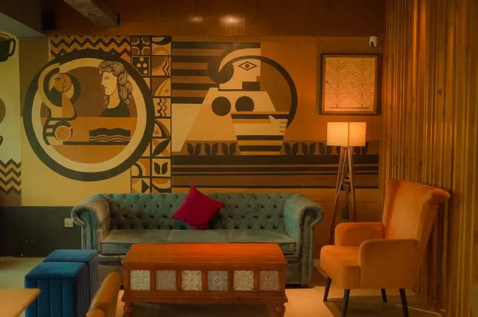
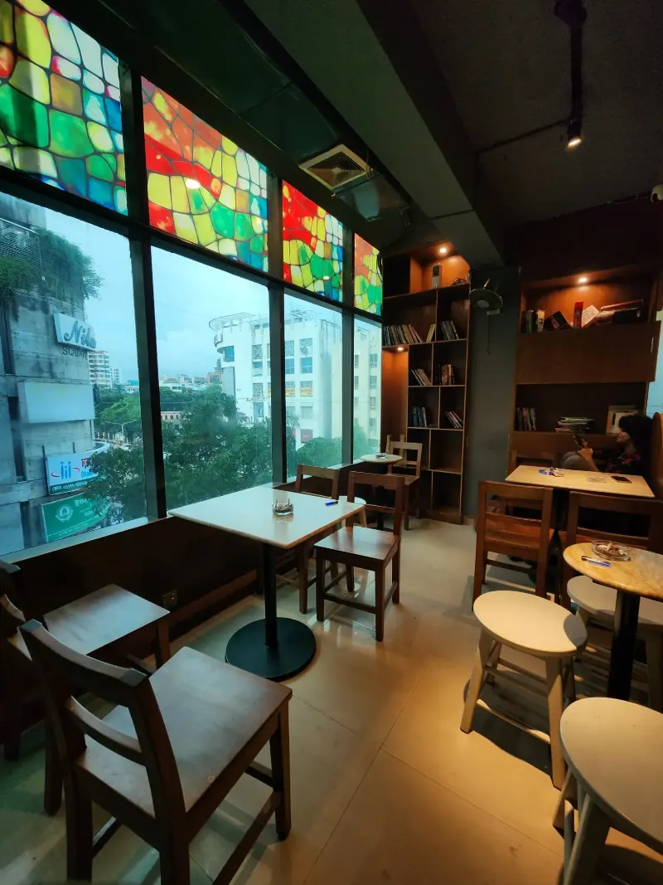
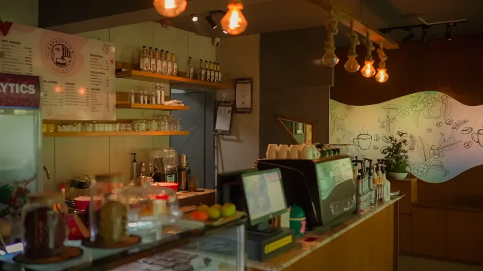
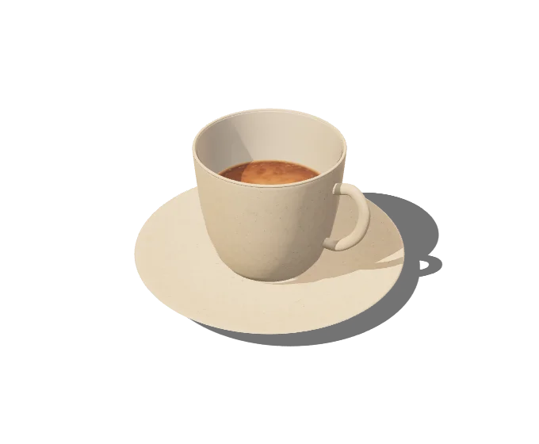

Concept and brand
Who your café is for, what it stands for, and how that shows up in the name, the room and the cup.
- Market and location study
- Positioning and name
- Brand and interior direction
From the first idea to the final cup, I help founders build cafés people love, and businesses that last.

Hire me for one part or the whole journey. Most founders start with a concept and a set of numbers.
Who your café is for, what it stands for, and how that shows up in the name, the room and the cup.
A layout where guests know where to go, and baristas never take an extra step during the morning rush.
A focused menu with every recipe costed to the gram, so each item earns its place on the board.
Hiring, recipes and service standards your team can keep long after I've gone.
A launch plan, the first ninety days, and a clear look at the numbers every month after.
Cafelytics is open in Dhaka. Its Saudi branch and a new Bangladeshi café are being built now.

Open nowOpen daily8 AM to 11 PM, coffee, all-day breakfast and food

In progressUnder constructionBuildingthe brand's second branch, now in the build phase

In progressBuildingname under wraps until opening, now in the build phase
Planning a new café, or fixing one that's open? Let's talk it through.
Book a consultation
I built Cafelytics, a modern café in Dhanmondi that's open every day from eight in the morning until eleven at night. Now I'm taking it to Saudi Arabia, and helping another Bangladeshi café through its build.
Now I work with a small number of founders each year, so every project gets my full attention, from the first sketch to the first regular.
“A café isn't built on opening day. It's built in the hundred small decisions before it, and the first regular after it.”
Mitua Rahman
“I design for the Tuesday morning rush, not the launch photos. That's when you find out if a café works.”
Mitua Rahman
“Every table, recipe and price should earn its place. Beautiful is the start, not the finish.”
Mitua Rahman

Tell me about your café. I reply within two days.
Book a free consultation